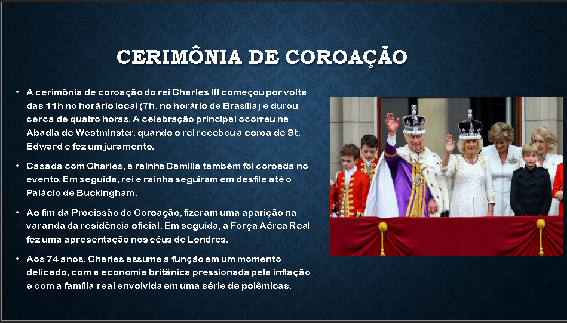

Visitar Roma é fazer uma verdadeira viagem na história da humanidade. Roma foi a primeira metrópole do Ocidente, berço de uma das mais importantes civilizações antigas. Roma caput mundi, ou seja, Roma o centro do mundo. Por séculos, Roma foi o centro da Europa durante o Imperio Romano.
Hoje enquanto você caminha pelas ruas do centro pode ser surpreendido por um monumento de 2000 anos de história que aparece ao improviso. Ou com obras de arte e esculturas a céu aberto realizadas por grandes artistas que você provavelmente estudou nos livros da escola.
Dentro de Roma fica também o Vaticano, o menor país do mundo, onde encontra-se o Papa e a sede da religião católica. Um poder religioso que influenciou (e influencia até hoje) a vida de muitas pessoas espalhadas pelo planeta. Roma é também
a cidade do cinema italiano. Muitos filmes italianos foram registrados aqui na chamada “Cidade Eterna”. Até os mais jovens devem ter assistido a cena do banho na Fontana di Trevi realizada por Anita Ekberg e Marcello Mastroianni no filme
La Dolce Vita de Fellini. Mesmo depois da pandemia a Fontana di Trevi fica ainda lotada de turistas em busca da foto perfeita. Nem se arrisque a fazer um banho na Fontana di Trevi, hoje provavelmente sairia de lá com uma bela multa.
1. Coliseu
2. Panteão
3. Fórum Romano
4. Basílica de São Pedro
5. Piazza Navona
6. Fontana di Trevi
7. Piazza di Spagna
8. Bocca della Verità
9. Palatino
10. Piazza del Campidoglio
Aos 74 anos, o Rei Charles III é coroado no Reino Unido
